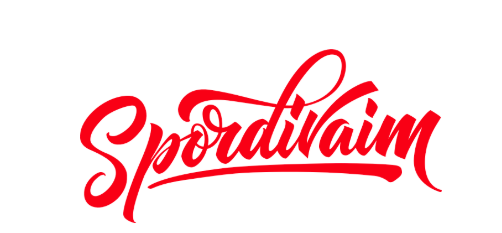

Ülevaade sellest, milliste spordialadega tegeleme eri perioodidel.
Põhiliigutused, tasakaal, koordinatsioon ja rühmatöö harjutused. Eesmärk on luua hea alus järgnevateks kuudeks.
Korvpall, jalgpall ja käsipall — põhitehnikad ja lihtsad mänguvormid, kohandatud vanuserühmale.
Rõhk paindlikkusel, kehatunnetusel ja lihtsatel akrobaatikaelementidel.
Jooksmine, hüppamine ja viskamine — mänguliste harjutuste kaudu, koos väikeste sisemiste võistlustega.
Aasta jooksul õpitu kokkuvõte, sõbralikud võistkondlikud mängud ja hooaja lõpupidu.
aastaplaan.html GitHubis. Iga periood on üks plokk, mis algab reaga <div class="term-row"> — muutke ainult pealkirja ja kirjeldust, mitte HTML-märgendeid.